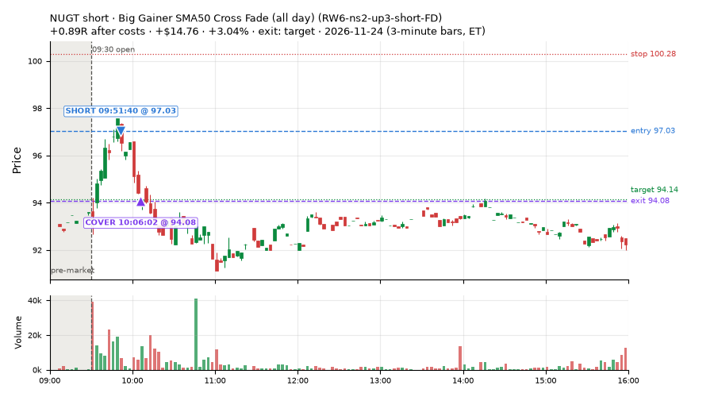
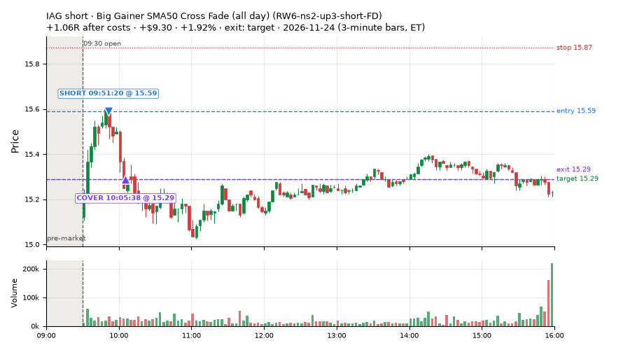
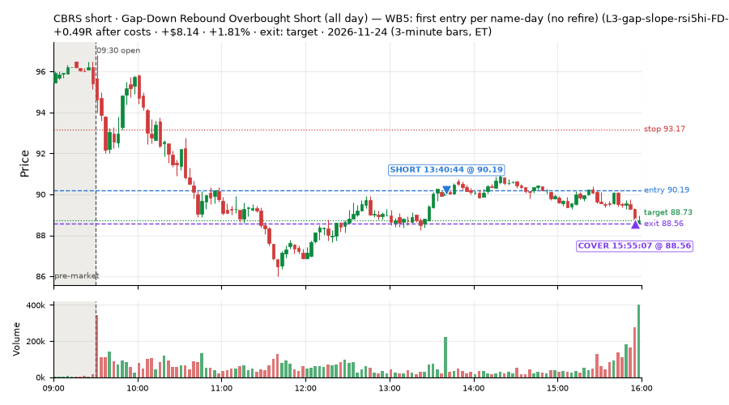
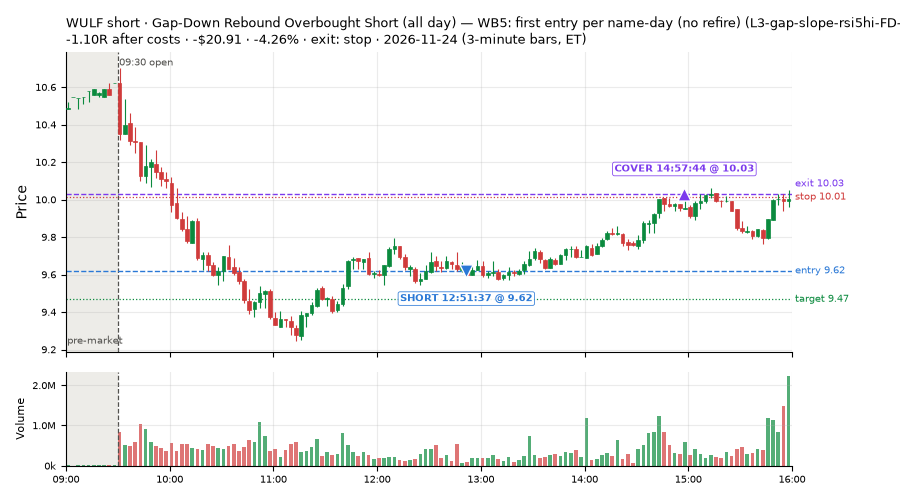
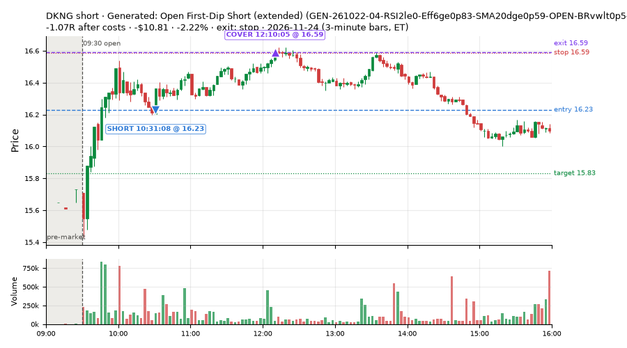
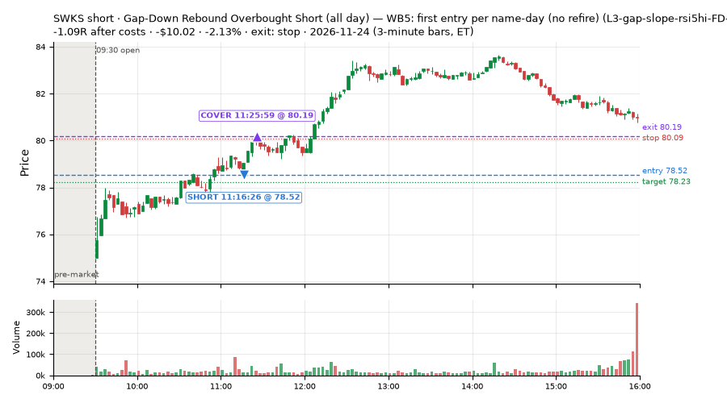
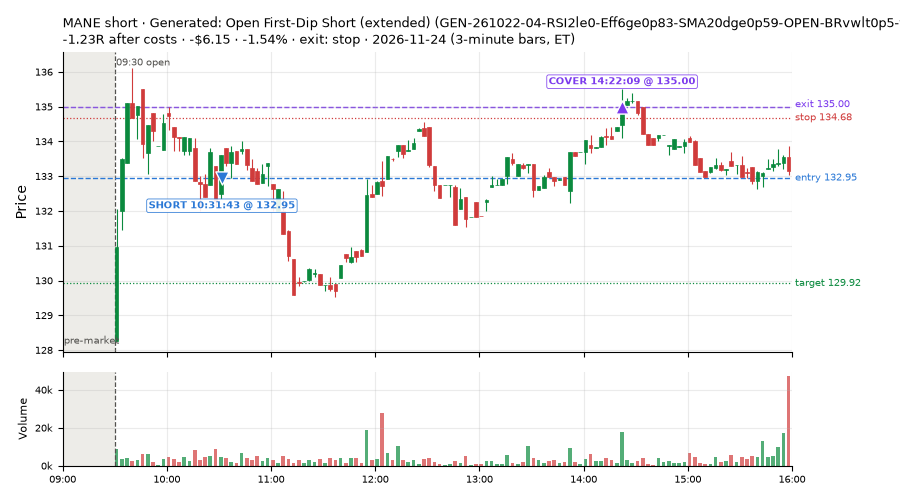
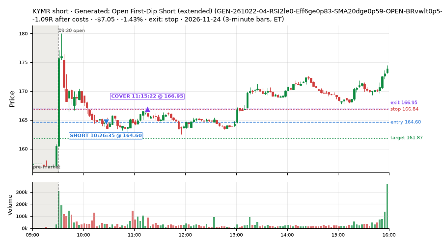

57 trades · win rate 60% · P/L $55.76
PROBATION: no live setup has passed both locked test periods. 10 owner-directed setups added 2026-10-08 (MarcoFlow top 5 + 5 new), untested live. RW6G1 (RW6 + VWAP band guard) added 2026-10-09, probation.

| Symbol | Setup | Side | In | Out | Entry | Exit | Exit reason | % gained | P/L |
|---|---|---|---|---|---|---|---|---|---|
| NUGT | Big Gainer SMA50 Cross Fade (all day) (RW6-ns2-up3-short-FD) | short | 09:51 | 10:06 | 97.03 | 94.08 | target | +3.04% | $14.76 |
| IAG | Big Gainer SMA50 Cross Fade (all day) (RW6-ns2-up3-short-FD) | short | 09:51 | 10:05 | 15.59 | 15.29 | target | +1.92% | $9.30 |
| CBRS | Gap-Down Rebound Overbought Short (all day) — WB5: first entry per name-day (no refire) (L3-gap-slope-rsi5hi-FD-WB5) | short | 13:40 | 15:55 | 90.19 | 88.56 | target | +1.81% | $8.14 |
| Symbol | Setup | Side | In | Out | Entry | Exit | Exit reason | % lost | P/L |
|---|---|---|---|---|---|---|---|---|---|
| WULF | L3-gap-slope-rsi5hi-FD-WB5 | short | 12:51 | 14:57 | 9.62 | 10.03 | stop | -4.26% | $-20.91 |
| DKNG | GEN-261022-04-RSI2le0-Eff6ge0p83-SMA20dge0p59-OPEN-BRvwlt0p5-t1s1-short | short | 10:31 | 12:10 | 16.23 | 16.59 | stop | -2.22% | $-10.81 |
| SWKS | L3-gap-slope-rsi5hi-FD-WB5 | short | 11:16 | 11:25 | 78.52 | 80.19 | stop | -2.13% | $-10.02 |
| MANE | GEN-261022-04-RSI2le0-Eff6ge0p83-SMA20dge0p59-OPEN-BRvwlt0p5-t1s1-short | short | 10:31 | 14:22 | 132.95 | 135.00 | stop | -1.54% | $-6.15 |
| KYMR | GEN-261022-04-RSI2le0-Eff6ge0p83-SMA20dge0p59-OPEN-BRvwlt0p5-t1s1-short | short | 10:26 | 11:15 | 164.60 | 166.95 | stop | -1.43% | $-7.05 |








Signal to fill: median 2s, 90th percentile 4s (57 trades). Bars close each minute; the order follows the bar close.
Best excursion (MFE): median 0.42R; worst (MAE) median 0.30R. 25% of trades never got +0.25R in our favour; 1 reached +1R and still closed at or below 0.
| Symbol | Setup | Best R | Worst R | Closed R |
|---|---|---|---|---|
| MANE | GEN-261022-04-RSI2le0-Eff6ge0p83-SMA20dge0p59-OPEN-BRvwlt0p5-t1s1-short | +1.98 | -1.48 | -1.23 |
| KYMR | GEN-261022-04-RSI2le0-Eff6ge0p83-SMA20dge0p59-OPEN-BRvwlt0p5-t1s1-short | +0.75 | -1.05 | -1.09 |
| NTRA | RW3-gapdn-rsi5pop-flowsell-short-FD-WB4 | +0.99 | -0.64 | -0.64 |
| ADM | CWT05-flush-m075-v3-long | +0.31 | -1.46 | -1.21 |
| ROIV | GEN-261023-03-RSI5le13-VWAPatrlem0p34-OPEN-BRvwgt0p6-holdtr-short | +0.32 | -1.01 | -1.07 |
| Entry time | Trades | Win | Avg R | P/L |
|---|---|---|---|---|
| 09:50-10:30 | 5 | 60% | +0.05 | $13.05 |
| 10:30-11:30 | 9 | 11% | -0.61 | $-42.02 |
| 11:30-13:00 | 29 | 66% | +0.05 | $45.37 |
| 13:00-14:00 | 6 | 83% | +0.27 | $21.14 |
| 14:00-16:00 | 8 | 75% | +0.26 | $18.22 |
| Setup | Trades | Win | Avg R after costs | Adj R (net of SPY) | Avg R ex-market (all sessions) | P/L |
|---|---|---|---|---|---|---|
| Panic Flush Reversal (deep, 3x volume) (CWT05-flush-m075-v3-long) | 1.0 | 0% | -1.21 | -1.31 | -0.24 (beta +1.11, n 14) | $-3.92 |
| Generated: Open First-Dip Short (extended) (GEN-261022-04-RSI2le0-Eff6ge0p83-SMA20dge0p59-OPEN-BRvwlt0p5-t1s1-short) | 4.0 | 0% | -1.14 | -1.31 | -0.72 (beta -0.84, n 9) | $-27.48 |
| Generated: Open Oversold Below-VWAP Short (GEN-261023-03-RSI5le13-VWAPatrlem0p34-OPEN-BRvwgt0p6-holdtr-short) | 2.0 | 50% | -0.30 | -0.74 | +0.25 (beta +0.56, n 10) | $-3.96 |
| Gap-Down Rebound Overbought Short (all day) — WB5: first entry per name-day (no refire) (L3-gap-slope-rsi5hi-FD-WB5) | 26.0 | 81% | +0.16 | +0.07 | -0.19 (beta -1.11, n 32) | $67.65 |
| * Oversold Pop after an SPY Dip-Turn (trailing) (near-miss) (LD7-ns1-idxturn-holdtr-long) | 1.0 | 100% | +1.03 | +0.32 | +0.43 (beta +0.47, n 6) | $6.30 |
| Gap-Down Pop Fade, Heavy Selling (all day) — WB4: up-day entry cut + SPY exit 0.30% (RW3-gapdn-rsi5pop-flowsell-short-FD-WB4) | 13.0 | 23% | -0.30 | -0.24 | -0.17 (beta -0.76, n 37) | $-36.73 |
| Big Gainer SMA50 Cross Fade (all day) (RW6-ns2-up3-short-FD) | 6.0 | 83% | +0.67 | +0.54 | +0.13 (beta -0.35, n 23) | $36.88 |
| Midday-to-Close ETF Dip Buy (WB4 wide) (ULT-22-wb4-wide-etf-long) | 4.0 | 75% | +0.32 | +0.38 | +0.32 (beta +1.86, n 28) | $17.02 |
Market direction (SPY, beta 1) accounted for $28.65 of today's $55.76; the rest ($27.11) came from the setups themselves. Avg R net of SPY: -0.07 (incl. a hedge leg's cost; report only).
21 setups live today. Today: 180 signals, 57 taken, 2 lost because another setup held the symbol (1%). Since 2026-11-05 (14 sessions): 1435 signals, 636 taken, 9 lost to other setups (1%). Peak open positions today 31 of 400 slots. Earnings blackout removed 124 symbols before scanning.
Simulated playing time (not live): 792 what-if trades of signals not taken, avg -0.17R, 48% winners; of them 9 lost to another setup (avg +0.27R).
Silent: IDX3-spy075-0955-3x-trail, LD5-st2-breadthup-t05s1-long, GEN-261019-06-VWAPxUp-EMAdiffge0p29-PM-SPYgt0p5-holdtr-long, GEN-261026-10-ORBfailDn-EMAdChglem0p051-PM-BRopgt0p65-t1s1-long, NM-RWN4-ns2-spyup05-notfri-short
| Prio | Setup | Today sig / taken | Sessions | Signals / taken / trades | Taken/day | Expected/day | Lost to other setups | Lost to (setup n) | Top skip reasons | SIMULATED: not-taken n / avg R / win | Verdict |
|---|---|---|---|---|---|---|---|---|---|---|---|
| 1 | Gap-Down Pop Fade, Heavy Selling (all day) — WB4: up-day entry cut + SPY exit 0.30% RW3-gapdn-rsi5pop-flowsell-short-FD-WB4 | 21 / 13 | 6 | 73 / 37 / 37 | 6.17 | – | 0 | – | spread / quote / size 25, other 8, not shortable / shorts off 3 | 36 / +0.23R / 67% | ok 30.8 entries/week |
| 2 | Gap-Down Rebound Overbought Short (all day) — WB5: first entry per name-day (no refire) L3-gap-slope-rsi5hi-FD-WB5 | 112 / 26 | 4 | 212 / 32 / 32 | 8.00 | – | 0 | – | not shortable / shorts off 132, spread / quote / size 38, other 8 | 176 / -0.19R / 51% | ok 40.0 entries/week |
| 3 | RSI Collapse Dip Buy (all day) — WB1: skip when SPY up > 0.10% since 09:50 ST7-rsi50dn-long-pm-t1s1-FD-WB1 | 2 / 0 | 6 | 15 / 9 / 9 | 1.50 | – | 0 | – | spread / quote / size 3, other 3 | 6 / -0.48R / 33% | slow 7.5 entries/week; ~8 weeks to 60 trades |
| 4 | 20-Minute Opening Range Breakout — WB3: top 10 in play + price >= $20 orb20_a-WB3 | 0 / 0 | 6 | 5 / 2 / 2 | 0.33 | – | 0 | – | spread / quote / size 3 | 2 / -0.62R / 0% | slow 1.7 entries/week; ~36 weeks to 60 trades |
| 5 | Index Dip Bounce 1 TQQQ IDX1-qqq100-0955-TQQQ-trail | 0 / 0 | 14 | 2 / 2 / 2 | 0.14 | – | 0 | – | – | 0 / – | slow 0.7 entries/week; ~84 weeks to 60 trades |
| 6 | * SPY Dip of 0.2 ATR, Breadth Turn (SPXL, trailing) (near-miss) LD6-spy-dip020atr-breadthturn-spxl-holdtr-long | 0 / 0 | 14 | 2 / 2 / 2 | 0.14 | – | 0 | – | – | 0 / – | slow 0.7 entries/week; ~84 weeks to 60 trades |
| 7 | * Oversold Pop after an SPY Dip-Turn (trailing) (near-miss) LD7-ns1-idxturn-holdtr-long | 2 / 1 | 14 | 12 / 6 / 6 | 0.43 | – | 0 | – | spread / quote / size 2, price through stop/target 2, other 2 | 6 / -0.10R / 33% | slow 2.1 entries/week; ~28 weeks to 60 trades |
| 8 | Gap-Down Reclaim Fade, Afternoon (near-miss) NM-PM-gapdn-above-pdh-rvol-short | 0 / 0 | 14 | 5 / 1 / 1 | 0.07 | – | 0 | – | not shortable / shorts off 2, spread / quote / size 1, other 1 | 4 / -0.54R / 25% | slow 0.4 entries/week; ~168 weeks to 60 trades |
| 9 | Generated: Late Upper-Wick Short (SPY down) GEN-261029-07-UpWickge0p59-DayRngVsPrevle0p42-LATE-SPYltm0p5-t05s1-short | 0 / 0 | 7 | 58 / 48 / 48 | 6.86 | – | 0 | – | other 7, spread / quote / size 3 | 10 / +0.40R / 100% | ok 34.3 entries/week |
| 10 | Generated: Late New-Low Buy (SPY down) GEN-261026-06-NewLOD-SMA20slopelem0p28-LATE-SPYltm0p25-t1s1-long | 0 / 0 | 7 | 80 / 61 / 61 | 8.71 | – | 0 | – | other 11, spread / quote / size 8 | 19 / -0.14R / 42% | ok 43.6 entries/week |
| 11 | Prior-Day-High Break Fade (all day) ST5-pdbrkup-short-mid-t05s1-FD | 0 / 0 | 14 | 52 / 27 / 27 | 1.93 | 0.78 | 2 | ST7-rsi50dn-long-pm-t1s1-FD-WB1 2 | not shortable / shorts off 12, spread / quote / size 9, symbol held by another setup 2 | 25 / -0.04R / 64% | slow 9.6 entries/week; ~6 weeks to 60 trades |
| 12 | Generated: PM Gap-Down Above-VWAP Short GEN-261027-04-VWAPatrge0-Gaplem2-FromOpenlem2-PM-SPYdn-t1s1-short | 0 / 0 | 7 | 96 / 44 / 44 | 6.29 | – | 0 | – | spread / quote / size 19, other 18, not shortable / shorts off 15 | 52 / +0.26R / 67% | ok 31.4 entries/week |
| 13 | * Shallow Nasdaq Dip, Breadth Turn (TQQQ) (near-miss) LD2-qqq-dip015-breadthturn-tqqq-t05s1-long | 0 / 0 | 14 | 5 / 5 / 5 | 0.36 | – | 0 | – | – | 0 / – | slow 1.8 entries/week; ~34 weeks to 60 trades |
| 14 | Early NS3 Short While QQQ Up (near-miss) NM-RWR3-ns3-qqqup-early-short | 0 / 0 | 14 | 25 / 11 / 11 | 0.79 | – | 0 | – | spread / quote / size 7, not shortable / shorts off 5, other 2 | 14 / +0.36R / 71% | slow 3.9 entries/week; ~15 weeks to 60 trades |
| 15 | Generated: Open Oversold Below-VWAP Short GEN-261023-03-RSI5le13-VWAPatrlem0p34-OPEN-BRvwgt0p6-holdtr-short | 6 / 2 | 7 | 19 / 10 / 10 | 1.43 | – | 0 | – | spread / quote / size 7, not shortable / shorts off 2 | 9 / +0.09R / 33% | slow 7.1 entries/week; ~8 weeks to 60 trades |
| 16 | Gap-Up Faller Bounce Short (all day) ST3-rsi5up-short-pm-t1s1-FD | 0 / 0 | 14 | 50 / 29 / 29 | 2.07 | 1.35 | 1 | GEN-261027-05-VolRatioge1p5-ORLdistge0p41-ATRdge6-MID-BRvwgt0p7-t05s1-long 1 | not shortable / shorts off 11, spread / quote / size 8, symbol held by another setup 1 | 21 / -0.23R / 38% | slow 10.4 entries/week; ~6 weeks to 60 trades |
| 17 | Generated: Open First-Dip Short (extended) GEN-261022-04-RSI2le0-Eff6ge0p83-SMA20dge0p59-OPEN-BRvwlt0p5-t1s1-short | 14 / 4 | 7 | 33 / 9 / 9 | 1.29 | – | 0 | – | spread / quote / size 9, other 9, not shortable / shorts off 6 | 24 / -0.03R / 54% | slow 6.4 entries/week; ~9 weeks to 60 trades |
| 18 | Panic Flush Reversal (deep, 3x volume) CWT05-flush-m075-v3-long | 3 / 1 | 14 | 27 / 14 / 14 | 1.00 | – | 0 | – | other 6, spread / quote / size 4, broker rejected 2 | 12 / -0.09R / 67% | slow 5.0 entries/week; ~12 weeks to 60 trades |
| 19 | Spike-Pullback Flag Breakout CWT12-flag-s1-long | 2 / 0 | 14 | 30 / 17 / 17 | 1.21 | – | 0 | – | other 11, spread / quote / size 1, broker rejected 1 | 13 / +0.29R / 85% | slow 6.1 entries/week; ~10 weeks to 60 trades |
| 20 | Big Gainer SMA50 Cross Fade (all day) RW6-ns2-up3-short-FD | 10 / 6 | 8 | 66 / 23 / 23 | 2.88 | 7.12 | 2 | orb20_a-WB3 1, LD7-ns1-idxturn-holdtr-long 1 | not shortable / shorts off 32, spread / quote / size 7, symbol held by another setup 2 | 42 / +0.07R / 62% | slow 14.4 entries/week; ~4 weeks to 60 trades |
| 21 | Midday-to-Close ETF Dip Buy (WB4 wide) ULT-22-wb4-wide-etf-long | 8 / 4 | 3 | 35 / 28 / 28 | 9.33 | – | 2 | L3-gap-slope-rsi5hi-FD-WB5 2 | spread / quote / size 4, symbol held by another setup 2, other 1 | 7 / -0.09R / 43% | ok 46.7 entries/week |
Every trade is attached as a CSV you can open and edit in Excel or Google Sheets. Live page: https://misiti15.github.io/MCF/live/